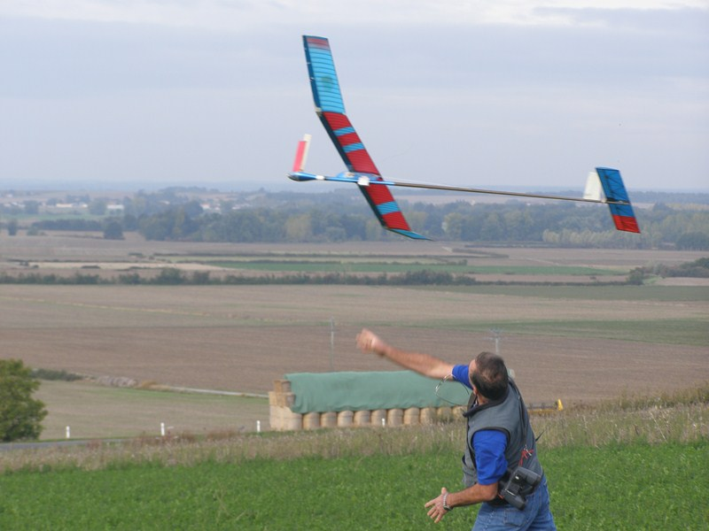
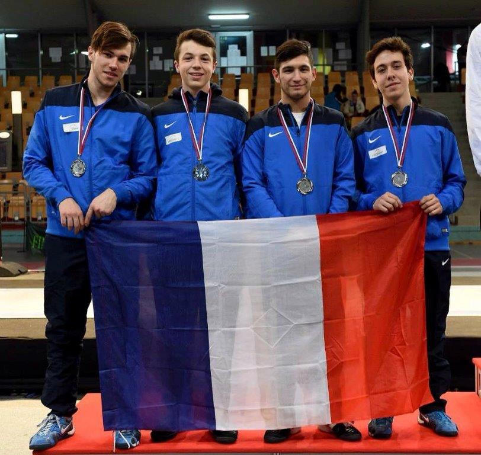
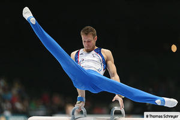

Les Ligues
FFAM : Aeromodélisme

Cette association crée le 16 janvier 1966 qui vise encourager, soutenir, coordonner et harmoniser les associations affiliées et des leur membres. Elle souhaite également faire connaître la pratique de l’aéromodélisme en France et dans les DOM-TOM. Elle organise des intiations au vols d’avions miniatures et pour les plus aguérri des compéttions.
L’escrime

Fondé en 2004, l’association organise des cours d’apprentissage de l’escrime. On y apprend les différentes parades et le respect envers l’autre. Elle est présente dans de très nombreuses compétitions où certain membres brillent.
La Gymnastique

L’association compte 61 clubs, ce qui donne 12500 licenciés. Elle forme, accompagne les clubs, organise des compétitions mais également accompagne des talents. Ils organisent également des commissions pour l’organisation de chaque domaine.